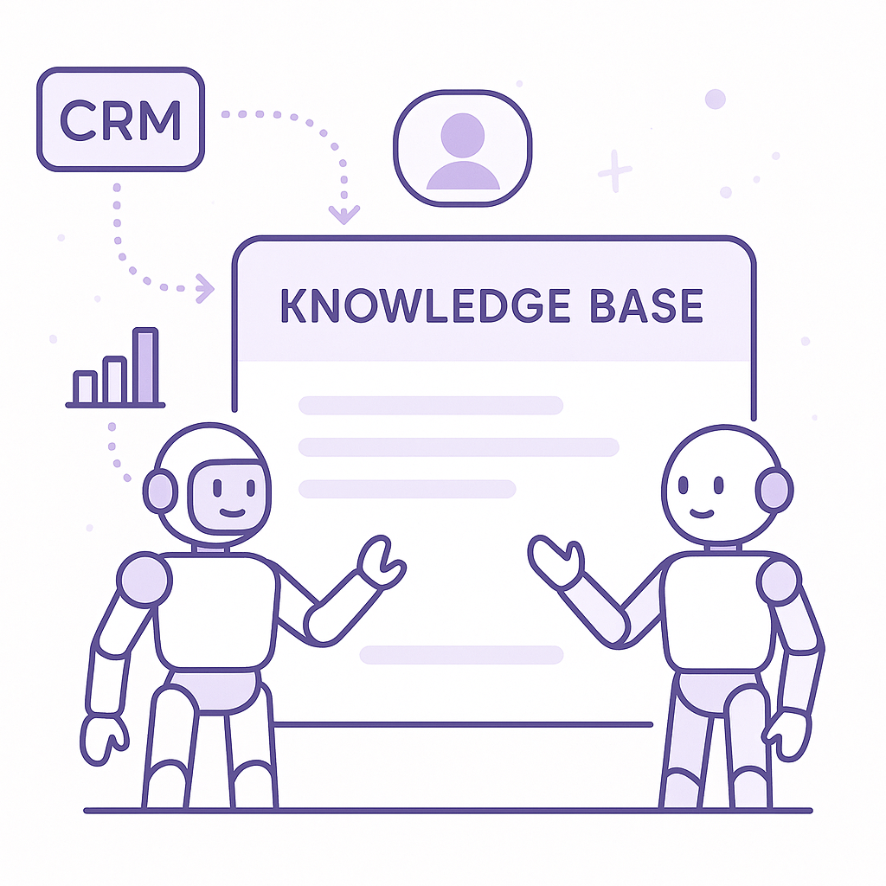
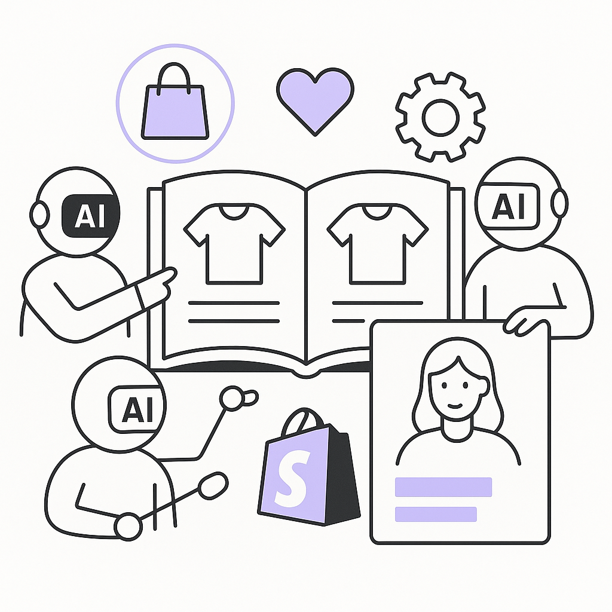
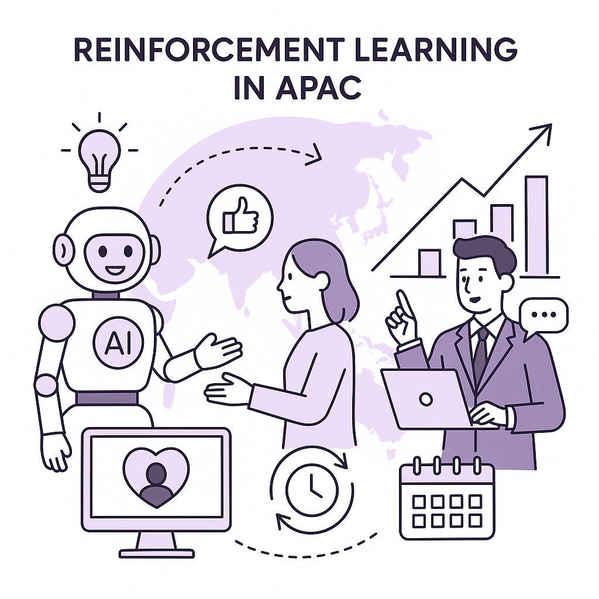
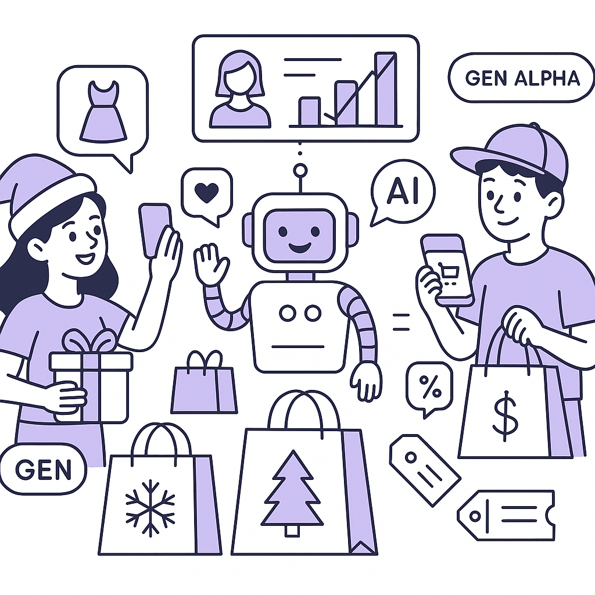

Publishing Recommendation
reviseThe drafted posts contain several instances of unsubstantiated claims and hype, particularly about the impact of AI agents and reinforcement learning. They need adjustments to align with our brand voice, which prioritizes evidence and practical insights over enthusiasm.
Today's drafts have good potential but need refinement to remove hype and ensure claims are well-supported. The posts on AI integration with enterprise knowledge and Shopify could benefit from more specific examples and a balanced view on data privacy issues. Additionally, some posts lack the depth and practical takeaways our audience expects. Revisions should focus on grounding the content in evidence and aligning with our practical and insightful brand voice.
LinkedIn Posts (9)
1. Connecting AI agents to enterprise knowledge ★ Purands solution · high priority
CTA: How are you using AI to enhance your customer interactions?

⬇ Download image
Image prompt · isometric-flat
Caption: AI agents tapping into enterprise knowledge for retention marketing.
Alternative hooks
- Imagine an AI agent that doesn't just follow scripts but taps into your entire enterprise knowledge base.
- Companies are transforming customer interactions by connecting AI to enterprise data.
- What if your AI agents could make decisions based on your entire company's knowledge?
Research behind this post (sources, summaries & confidence)
Connecting AI agents to enterprise knowledge conf 0.75 · AI in business
Linking AI agents with enterprise knowledge bases can enhance the effectiveness of retention marketing by providing more informed and contextually relevant customer interactions.
Sources & what I took from each
- AI agents are being connected to enterprise knowledge bases.: Several companies are working on integrating AI agents with enterprise data to improve customer interactions. ↗ read source
Examples
- An AI agent accessing company databases to provide real-time support and information to customers.
Original trend links
Risks / caveats
- Data security concerns with broader access to enterprise information.
- Complexity in setting up and maintaining these integrations.
2. Shopify opens its catalog up to more AI agents ★ Purands solution · high priority
CTA: How are you planning to use AI agents in your Shopify strategy?

⬇ Download image
Image prompt · isometric-flat
Caption: Shopify's open catalog for AI-driven personalization.
Alternative hooks
- Shopify's catalog is now AI-friendly. What does it mean for retention?
- How AI agents are transforming Shopify marketing strategies.
- Personalized shopping on Shopify? It's more possible than ever.
Research behind this post (sources, summaries & confidence)
Shopify opens its catalog up to more AI agents conf 0.70 · Shopify ecosystem
Shopify's decision to allow more AI agents to interact with its catalog represents a significant shift in agentic commerce, potentially transforming how products are marketed and sold. This move could lead to more personalized and efficient customer experiences, making it highly relevant for retention marketing strategies.
Sources & what I took from each
- Shopify is expanding AI agent capabilities.: Shopify has announced initiatives to integrate more AI capabilities into its platform, allowing third-party AI agents to access its catalog. ↗ read source
Examples
- AI agents could offer personalized shopping experiences by analyzing customer data and preferences.
Original trend links
Risks / caveats
- Increased reliance on AI could pose data privacy challenges.
- Potential for AI errors in product recommendations or pricing.
3. Alibaba Qwen Introduces QwenGyre: Elastic Reinforcement Learning RL for XLong-Horizon Agents ★ Purands solution · high priority
CTA: How do you see reinforcement learning reshaping customer engagement in your industry?

⬇ Download image
Image prompt · isometric-flat
Caption: Reinforcement learning in APAC for long-term customer engagement.
Alternative hooks
- Alibaba’s QwenGyre could redefine customer engagement in APAC.
- Long-term customer engagement just got a significant boost.
- Reinforcement learning might be the key to better retention.
Research behind this post (sources, summaries & confidence)
Alibaba Qwen Introduces QwenGyre: Elastic Reinforcement Learning RL for XLong-Horizon Agents conf 0.70 · AI startups
Alibaba's new reinforcement learning framework can significantly impact how long-term customer engagement strategies are developed and executed, especially in the APAC region where Alibaba has a strong presence.
Sources & what I took from each
- Alibaba is advancing reinforcement learning.: Alibaba's Qwen project introduces a new framework for long-term reinforcement learning, potentially enhancing AI applications. ↗ read source
Examples
- Alibaba using QwenGyre to improve customer engagement strategies over time.
Original trend links
Risks / caveats
- Complexity in implementing and maintaining advanced AI systems.
- Potential overestimation of reinforcement learning capabilities.
4. Gen Z, Gen Alpha and the AI-ification of retail this holiday season ★ Purands solution · high priority
CTA: How are you planning to engage Gen Z and Gen Alpha this holiday season?

⬇ Download image
Image prompt · isometric-flat
Caption: AI personalization for Gen Z and Gen Alpha this holiday season.
Alternative hooks
- Retailers are deploying AI tools to create personalized shopping experiences for Gen Z and Gen Alpha.
- AI-driven retail strategies are the key to winning over Gen Z and Gen Alpha this holiday season.
- How can AI help retailers connect with Gen Z and Gen Alpha during the holidays?
Research behind this post (sources, summaries & confidence)
Gen Z, Gen Alpha and the AI-ification of retail this holiday season conf 0.60 · AI in business
The incorporation of AI in holiday retail strategies, particularly targeting Gen Z and Gen Alpha, highlights the potential for AI to drive tailored consumer experiences and retention. Understanding these dynamics is crucial for marketers focused on retention and engagement.
Sources & what I took from each
- Retailers are increasingly using AI to engage younger customers.: Retailers are deploying AI tools to create personalized shopping experiences for Gen Z and Gen Alpha, aiming to enhance engagement and sales. ↗ read source
Examples
- AI-driven chatbots on retail websites engaging Gen Z consumers.
Original trend links
Risks / caveats
- Over-reliance on AI could alienate customers who value human interaction.
- Potential data privacy issues with younger consumers.
5. Microsoft AI’s MAI-Transcribe-2 undercuts OpenAI, Google and ElevenLabs on price and speed
CTA: How do you see affordable AI transcription impacting your business strategies?
Alternative hooks
- Microsoft's AI transcription is shaking up the market.
- Think AI transcription is expensive? Think again.
- AI tools are getting cheaper and faster. Here's why it matters.
Research behind this post (sources, summaries & confidence)
Microsoft AI’s MAI-Transcribe-2 undercuts OpenAI, Google and ElevenLabs on price and speed conf 0.70 · AI in business
Microsoft's competitive pricing for its AI transcription service highlights the increasing accessibility and affordability of AI tools, which can enhance customer communication strategies in retention marketing.
Sources & what I took from each
- Microsoft's AI transcription service is competitively priced.: Microsoft announced that its AI transcription service, MAI-Transcribe-2, offers lower costs and faster service than competitors. ↗ read source
Examples
- Companies using MAI-Transcribe-2 for customer service call transcriptions.
Original trend links
Risks / caveats
- Lower prices might lead to quality concerns.
- Increased competition could drive down prices industry-wide, affecting profitability.
6. Tencent's $5.7B Capital Raise in APAC
CTA: How do you see this impacting AI startups in the region?
Alternative hooks
- Tencent is making waves with a $5.7 billion debt raise.
- What does Tencent's $5.7 billion raise mean for AI in APAC?
- Tencent's recent $5.7 billion raise is more than just numbers.
Research behind this post (sources, summaries & confidence)
Tencent raised ~$5.7B via US dollar and offshore yuan debt offerings conf 0.70 · AI startups
Tencent's significant capital raise highlights the financial powerhouses driving AI innovation in the APAC region, affecting the competitive landscape for AI startups and retention marketing technologies.
Sources & what I took from each
- Tencent has raised a substantial amount through debt offerings.: Reports confirm Tencent raised approximately $5.7 billion via debt offerings, indicating strong financial backing for AI initiatives. ↗ read source
Original trend links
Risks / caveats
- Economic fluctuations could impact debt repayment and financial stability.
- Large capital raises could lead to increased competition in AI development.
7. AI labs are buying data from dead startups to train their models
CTA: How should we balance innovation with data privacy?
Alternative hooks
- When startups die, their data lives on.
- AI models are feasting on the remains of defunct startups.
- What happens to your data when a startup folds?
Research behind this post (sources, summaries & confidence)
AI labs are buying data from dead startups to train their models conf 0.65 · AI startups
The practice of acquiring data from defunct startups for AI model training raises ethical and operational questions, impacting trust and data governance in AI-driven retention marketing solutions.
Sources & what I took from each
- AI labs are acquiring data from defunct startups.: Reports indicate that AI labs are purchasing data from closed startups to train AI models, raising ethical concerns. ↗ read source
Examples
- A tech startup sold their user data following bankruptcy proceedings.
Original trend links
Risks / caveats
- Potential legal challenges regarding data ownership.
- Ethical concerns about user consent and data privacy.
8. OrcaRouter Releases OrcaCyber Zero 1.5 Cybersecurity Model With 1M Context
CTA: What experiences do you have with integrating new security models?
Alternative hooks
- Security isn't just a feature, it's a necessity.
- How secure is your AI-driven system?
- Is AI the answer to AI's own security challenges?
Research behind this post (sources, summaries & confidence)
OrcaRouter Releases OrcaCyber Zero 1.5 Cybersecurity Model With 1M Context conf 0.65 · AI startups
As AI-driven platforms become more prevalent in retention marketing, ensuring cybersecurity through models like OrcaCyber Zero is crucial for maintaining customer trust and data integrity.
Sources & what I took from each
- OrcaRouter is advancing cybersecurity with its new model.: OrcaRouter has developed a new cybersecurity model aimed at enhancing AI-driven data protection. ↗ read source
Examples
- OrcaCyber Zero being used by companies to secure customer data against breaches.
Original trend links
Risks / caveats
- Potential over-reliance on AI models for cybersecurity.
- Complexity in integrating new security models with existing systems.
9. Apple v. OpenAI: a US judge partly grants Apple's motion for expedited discovery
CTA: How do you think legal battles like this will impact future AI developments?
Alternative hooks
- A courtroom battle that could reshape AI tech partnerships.
- Apple and OpenAI: a legal clash over AI and IP.
- Why should AI developers care about Apple’s latest legal move?
Research behind this post (sources, summaries & confidence)
Apple v. OpenAI: a US judge partly grants Apple's motion for expedited discovery conf 0.60 · AI in business
Legal battles over AI and intellectual property, like Apple vs. OpenAI, underscore the importance of regulatory considerations in AI-driven marketing solutions, impacting how companies manage their data and technology partnerships.
Sources & what I took from each
- A legal case between Apple and OpenAI is ongoing.: A US judge has granted Apple's motion for expedited discovery in a legal case against OpenAI, emphasizing the significance of IP issues in AI. ↗ read source
Original trend links
Risks / caveats
- Legal outcomes could affect how AI technologies are developed and shared.
- Potential for increased regulatory scrutiny on AI companies.
Today's Trends
| # | Trend | Category | Why it matters |
|---|---|---|---|
| 1 | Shopify opens its catalog up to more AI agents
source |
Shopify ecosystem | Shopify's decision to allow more AI agents to interact with its catalog represents a significant shift in agentic commerce, potentially transforming how products are marketed and sold. This move could lead to more personalized and efficient customer experiences, making it highly relevant for retention marketing strategies. |
| 2 | Gen Z, Gen Alpha and the AI-ification of retail this holiday season
source |
AI in business | The incorporation of AI in holiday retail strategies, particularly targeting Gen Z and Gen Alpha, highlights the potential for AI to drive tailored consumer experiences and retention. Understanding these dynamics is crucial for marketers focused on retention and engagement. |
| 3 | AI labs are buying data from dead startups to train their models
source |
AI startups | The practice of acquiring data from defunct startups for AI model training raises ethical and operational questions, impacting trust and data governance in AI-driven retention marketing solutions. |
| 4 | Microsoft AI’s MAI-Transcribe-2 undercuts OpenAI, Google and ElevenLabs on price and speed
source |
AI in business | Microsoft's competitive pricing for its AI transcription service highlights the increasing accessibility and affordability of AI tools, which can enhance customer communication strategies in retention marketing. |
| 5 | Connecting AI agents to enterprise knowledge
source |
AI in business | Linking AI agents with enterprise knowledge bases can enhance the effectiveness of retention marketing by providing more informed and contextually relevant customer interactions. |
| 6 | Alibaba Qwen Introduces QwenGyre: Elastic Reinforcement Learning RL for XLong-Horizon Agents
source |
AI startups | Alibaba's new reinforcement learning framework can significantly impact how long-term customer engagement strategies are developed and executed, especially in the APAC region where Alibaba has a strong presence. |
| 7 | OrcaRouter Releases OrcaCyber Zero 1.5 Cybersecurity Model With 1M Context
source |
AI startups | As AI-driven platforms become more prevalent in retention marketing, ensuring cybersecurity through models like OrcaCyber Zero is crucial for maintaining customer trust and data integrity. |
| 8 | Shopify take-home: 'Barako & Co.' coffee brand theme + Barako Merchant Tools embedded app
source |
Shopify ecosystem | The development of specific merchant tools within the Shopify ecosystem allows for more tailored loyalty and inventory management solutions, which are essential for effective retention strategies. |
| 9 | Apple v. OpenAI: a US judge partly grants Apple's motion for expedited discovery
source |
AI in business | Legal battles over AI and intellectual property, like Apple vs. OpenAI, underscore the importance of regulatory considerations in AI-driven marketing solutions, impacting how companies manage their data and technology partnerships. |
| 10 | Tencent raised ~$5.7B via US dollar and offshore yuan debt offerings
source |
AI startups | Tencent's significant capital raise highlights the financial powerhouses driving AI innovation in the APAC region, affecting the competitive landscape for AI startups and retention marketing technologies. |
Risk Assessment
- Overstated claims about AI agent capabilities and impacts without evidence.
- Potential data privacy and security concerns not adequately addressed in posts about AI integration with enterprise knowledge and Shopify.
Suggested LinkedIn Comments (30)
Open each post, then paste the copied comment. Nothing is posted automatically.
1. insight · rss:techcrunch.com — U.S. authorities warn that sanctioned hackers are increasingly targeting America
Post by: rss:techcrunch.com
Why it works: It adds a concrete observation about the role of human factors in cybersecurity, elevating the discussion beyond just the technical threat.
↗ Open LinkedIn post to paste comment2. opinion · rss:techcrunch.com — Max Hodak, the former president and co-founder of Neuralink, detailed on stage a
Post by: rss:techcrunch.com
Why it works: The comment expresses a strong opinion on the potential impact of BCIs, aligning with the post's focus on innovation.
↗ Open LinkedIn post to paste comment3. respectful challenge · rss:techcrunch.com — Cerebras CEO Andrew Feldman predicts a future where personal AI assistants becom
Post by: rss:techcrunch.com
Why it works: It acknowledges the prediction while introducing the challenge of privacy and cloud dependency, adding depth to the discussion.
↗ Open LinkedIn post to paste comment4. insight · rss:techcrunch.com — Industrial Next helps manufacturers automate complex, delicate tasks that have t
Post by: rss:techcrunch.com
Why it works: The comment highlights the practical benefits of AI in manufacturing, providing a concrete example of AI's utility.
↗ Open LinkedIn post to paste comment5. opinion · rss:techcrunch.com — Cerebras CEO Andrew Feldman has a message for AI leaders spreading doomsday warn
Post by: rss:techcrunch.com
Why it works: It aligns with Feldman's stance, emphasizing a balanced view that considers both risks and benefits.
↗ Open LinkedIn post to paste comment6. insight · rss:techcrunch.com — The steel industry is a big polluter, but Helix Carbon can upcycle pollution fro
Post by: rss:techcrunch.com
Why it works: This comment highlights the dual benefits of environmental and economic gains, providing a balanced view of the innovation's impact.
↗ Open LinkedIn post to paste comment7. insight · rss:techcrunch.com — It's not clear exactly for what purpose the recording device was used, but FBI d
Post by: rss:techcrunch.com
Why it works: It adds value by focusing on the necessity of strong security practices in tech innovation, rather than just the incident itself.
↗ Open LinkedIn post to paste comment8. expansion · rss:techcrunch.com — A federal judge ruled that Apple can access OpenAI's interview materials involvi
Post by: rss:techcrunch.com
Why it works: It expands on the potential implications of the ruling, adding a forward-looking perspective on its impact.
↗ Open LinkedIn post to paste comment9. opinion · rss:techcrunch.com — Fusion power startup Cambridge Heavy Industries is building a small, laser-power
Post by: rss:techcrunch.com
Why it works: The comment underscores the transformative potential of fusion power, aligning with the post's focus on innovative energy solutions.
↗ Open LinkedIn post to paste comment10. insight · rss:techcrunch.com — Fusion power plants will need a lot of lithium, and Licube is preparing to be a
Post by: rss:techcrunch.com
Why it works: It provides a concrete insight into the supply chain aspect of fusion power, which is often overlooked in discussions about energy innovation.
↗ Open LinkedIn post to paste comment11. insight · rss:www.theverge.com — Apple's ad introducing its new HomeView smart display is a little unusual. It's
Post by: rss:www.theverge.com
Why it works: It connects the ad's creative choice with a broader trend of valuing authenticity, providing a concrete observation.
↗ Open LinkedIn post to paste comment12. opinion · rss:www.theverge.com — An OpenAI engineer was arrested after the company said it discovered a "sophisti
Post by: rss:www.theverge.com
Why it works: It highlights the broader implications of the incident, focusing on trust in the tech industry.
↗ Open LinkedIn post to paste comment13. insight · rss:www.theverge.com — Apple Music's iconic red app icon has reportedly been replaced with a black-and-
Post by: rss:www.theverge.com
Why it works: It draws attention to the significance of design choices in brand perception, adding depth to the post's observation.
↗ Open LinkedIn post to paste comment14. expansion · rss:www.theverge.com — More AI agents will soon be able to browse and purchase from Shopify listings, m
Post by: rss:www.theverge.com
Why it works: It expands on the post by considering both the potential benefits and ethical considerations of AI in shopping.
↗ Open LinkedIn post to paste comment15. insight · rss:www.theverge.com — Retro gaming is going through a wild time at the moment, thanks to decompilation
Post by: rss:www.theverge.com
Why it works: It appreciates the cultural and technological significance of the trend, adding a positive perspective.
↗ Open LinkedIn post to paste comment16. insight · rss:www.theverge.com — One of the best deals we’ve seen today bundles together a great pair of headphon
Post by: rss:www.theverge.com
Why it works: It identifies the strategic benefit of the bundle, providing a business angle to the post.
↗ Open LinkedIn post to paste comment17. insight · rss:www.theverge.com — Days after Ukrainian military drones took down several Russian data centers, Pre
Post by: rss:www.theverge.com
Why it works: It links the post to a broader discussion on the interplay between physical and digital realms in conflict.
↗ Open LinkedIn post to paste comment18. insight · rss:www.theverge.com — Rivian CEO RJ Scaringe's startup Mind Robotics announced the appointment of Doug
Post by: rss:www.theverge.com
Why it works: It connects his past experience with potential future contributions, adding depth to the announcement.
↗ Open LinkedIn post to paste comment19. opinion · rss:www.theverge.com — The other day I whizzed past several people while running in the park, my playli
Post by: rss:www.theverge.com
Why it works: It reflects on the role of technology in everyday life, adding a philosophical angle to the post.
↗ Open LinkedIn post to paste comment20. insight · rss:www.theverge.com — The National Highway Traffic Safety Administration says it's evaluating allegati
Post by: rss:www.theverge.com
Why it works: It emphasizes the importance of safety and regulation in gaining acceptance for autonomous technologies.
↗ Open LinkedIn post to paste comment21. opinion · rss:feeds.arstechnica.com — "I can always find a couple of biotech stocks to smoke," Shkreli said in a lives
Post by: rss:feeds.arstechnica.com
Why it works: This comment takes a stance on the ethics of financial behavior in the biotech sector, adding depth to the post.
↗ Open LinkedIn post to paste comment22. insight · rss:feeds.arstechnica.com — But third-party sellers, not Anbernic, are the ones routinely selling ROM-filled
Post by: rss:feeds.arstechnica.com
Why it works: The comment provides an insight into the broader implications of digital piracy, making it relevant to industry professionals.
↗ Open LinkedIn post to paste comment23. expansion · rss:feeds.arstechnica.com — Topgolf and VMware "ran deep" before the migration.
Post by: rss:feeds.arstechnica.com
Why it works: It expands on the importance of vendor relationships in tech migrations, a useful insight for the audience.
↗ Open LinkedIn post to paste comment24. opinion · rss:feeds.arstechnica.com — US attorney apologized to court, said government has stopped running Trump ads.
Post by: rss:feeds.arstechnica.com
Why it works: The comment offers a clear opinion on the intersection of politics and digital media, which is relevant to current digital marketing practices.
↗ Open LinkedIn post to paste comment25. opinion · rss:feeds.arstechnica.com — Disney may acquire tech from one of the first chatbot makers linked to child sui
Post by: rss:feeds.arstechnica.com
Why it works: It addresses the sensitive ethical considerations involved in tech acquisitions, adding a critical perspective.
↗ Open LinkedIn post to paste comment26. respectful challenge · rss:feeds.arstechnica.com — The higher prices are said to be unrelated to the Skydance merger.
Post by: rss:feeds.arstechnica.com
Why it works: This challenges the reasoning behind price changes, prompting a call for transparency that resonates with consumers.
↗ Open LinkedIn post to paste comment27. insight · rss:feeds.arstechnica.com — Small EVs and efficient people carriers update familiar names for the modern age
Post by: rss:feeds.arstechnica.com
Why it works: The comment highlights the broader trend of sustainability in the auto industry, providing a positive view on innovation.
↗ Open LinkedIn post to paste comment28. opinion · rss:feeds.arstechnica.com — Google plans to help turn those personal AI-generated apps into wide releases.
Post by: rss:feeds.arstechnica.com
Why it works: It provides a balanced view on Google's plans, considering both opportunities and challenges.
↗ Open LinkedIn post to paste comment29. insight · rss:feeds.arstechnica.com — Developers will get 50 percent discounted API rates through November.
Post by: rss:feeds.arstechnica.com
Why it works: This comment highlights the potential positive impact of reduced API rates, encouraging innovation.
↗ Open LinkedIn post to paste comment30. insight · rss:feeds.arstechnica.com — It can recognize up to six users with its camera.
Post by: rss:feeds.arstechnica.com
Why it works: It provides a practical insight into how AI technology can improve user experience in everyday devices.
↗ Open LinkedIn post to paste comment